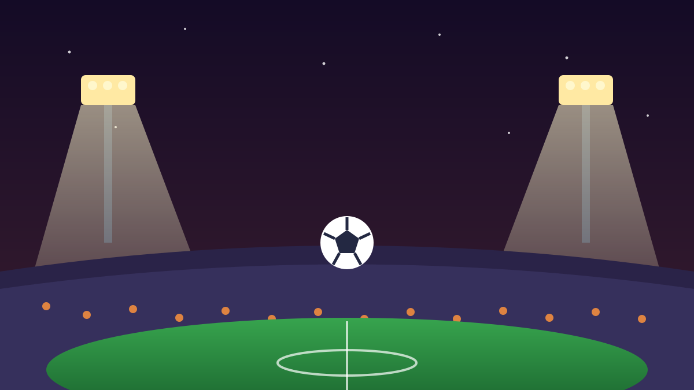

1 / 7

⚽ OLAHRAGA
Pedro gantung sepatu. Era 20 tahun, 25 trofi, kelar.
Legenda Barcelona, Chelsea, dan timnas Spanyol resmi pensiun 7 Oktober 2026. Geser buat nostalgia bareng →
2 / 7
🎥
Umumkan lewat video emosional di Camp Nou
Pedro kabarin kabar pensiunnya lewat video emosional di media sosial, direkam di Camp Nou — rumah yang membesarkan namanya.
Plot twist: ~2 hari sebelumnya dia masih di Jakarta sebagai delegasi FIFA Legends, nonton langsung final FIFA ASEAN Cup 2026 Indonesia vs Thailand di SUGBK.
3 / 7
🇮🇹
Klub terakhir: Lazio, kontrak habis Juli 2026
Pedro pensiun di usia 39 tahun. Klub terakhirnya adalah Lazio, dengan kontrak yang berakhir Juli 2026 — setelah itu dia nggak main di mana-mana lagi.
Italia bikin dia cinta mati: katanya negeri itu menyentuh hatinya, layaknya dia diperlakukan seperti anak sendiri.
4 / 7
🔵🔴
Era Barcelona: 321 laga, 20 trofi
Bareng Barcelona dari 2008, Pedro main 321 laga dan bikin 99 gol. Total 20 trofi mayor, termasuk 3 gelar Liga Champions.
Momen paling ikonik? Golnya di final UCL 2011 saat Barça menang 3-1 atas Manchester United. Era keemasan tiki-taka, bestie.
5 / 7
🔵
Di Chelsea juga juara mulu
Musim 2015–2020 Pedro bela Chelsea dan tetap juara: Premier League 2017, Piala FA, dan Liga Europa.
Pindah negara, beda liga, gaya main tetap klinis di sayap. Dia salah satu winger paling underrated di eranya, valid.
6 / 7
🇪🇸
Juara dunia bareng Spanyol 🏆
Pedro pegang medali juara Piala Dunia 2010 — dia starter di final lawan Belanda — plus juara Euro 2012.
Catatan timnasnya: 65 caps, 17 gol. Era emas La Roja nggak lengkap tanpa namanya.
7 / 7
🤔
Efeknya ke lo apa?
Satu era kelar, bestie. Kalau lo Gen Z yang tumbuh nonton highlight Messi-Xavi-Iniesta era 2010-an, Pedro tuh figuran yang selalu nyala pas momen gede.
Pelajaran buat kita: karier nggak harus selalu jadi bintang utama — yang penting konsisten dan punya trofi buat cerita. Sekarang saatnya nyari highlight lamanya lagi di YouTube.